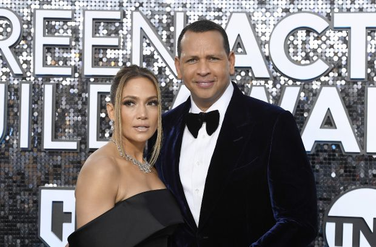

Интригата се заплита

Наскоро двамата бяха забелязани заедно и изглеждаха все така влюбени и отдадени един на друг. А това определено звучи като новина на фона на зачестилите напоследък из медийното пространство слухове за изневяра от страна на Родригес.
Какво се случва с връзката между една от най-любимите звездни двойки зад Океана – Дженифър Лопес и Алекс Родригес?
Скандал
До момента, в който папараци уловиха Лопес и половинката ѝ на излизане от ресторант в Маями, американските таблоиди упорито разнасяха мълвата, че бившият бейзболист има паралелна връзка с друга жена.
Общата им поява може и да има, а може и да няма нищо общо с твърдението, че Алекс е кръшкал на латино дивата със звездата от риалити шоуто Southern Charm Мадисън ЛеКрой.
Теди
Общата им поява може и да има, а може и да няма нищо общо с твърдението, че Алекс е кръшкал на латино дивата със звездата от риалити шоуто Southern Charm Мадисън ЛеКрой.
Факт обаче е, че слухът продължава да вълнува жълтата преса и тя неумолимо продължава да натяква на читателите си пикантната мълва.